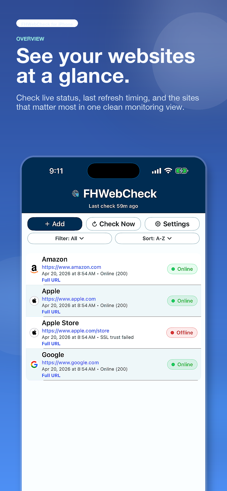
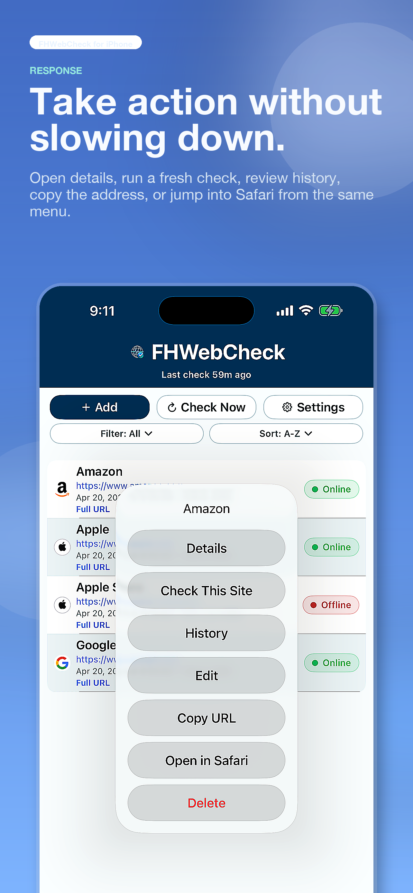
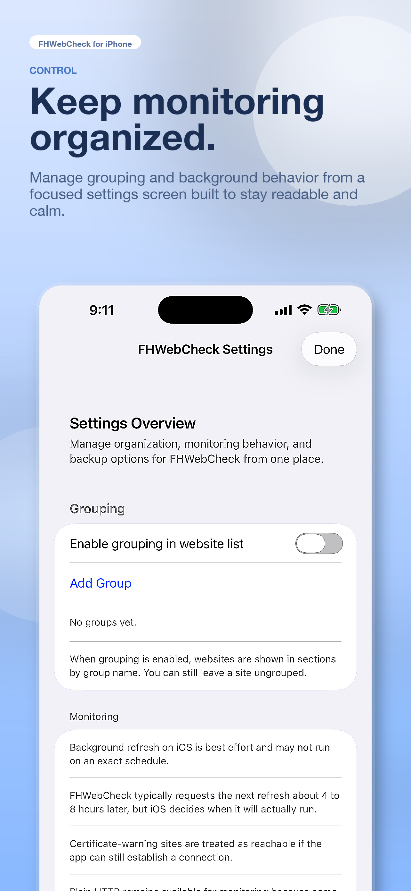
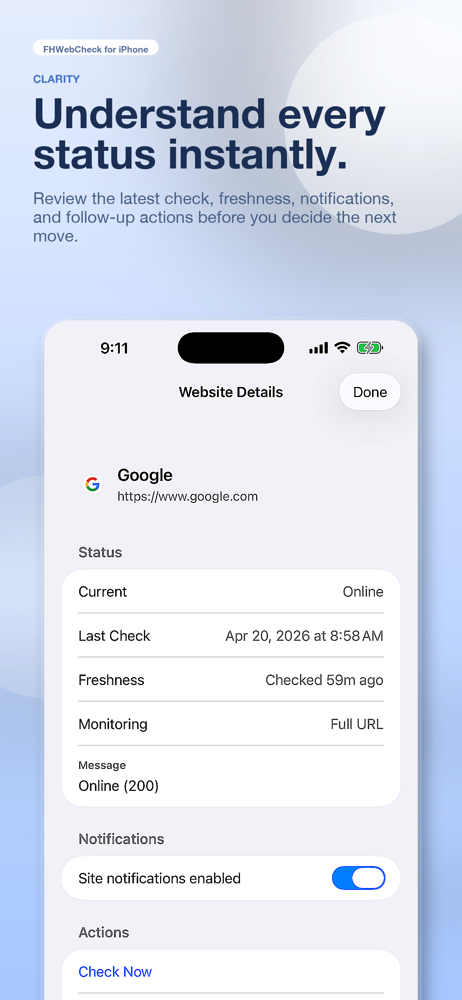
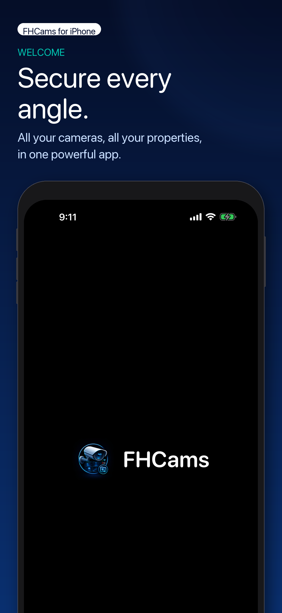
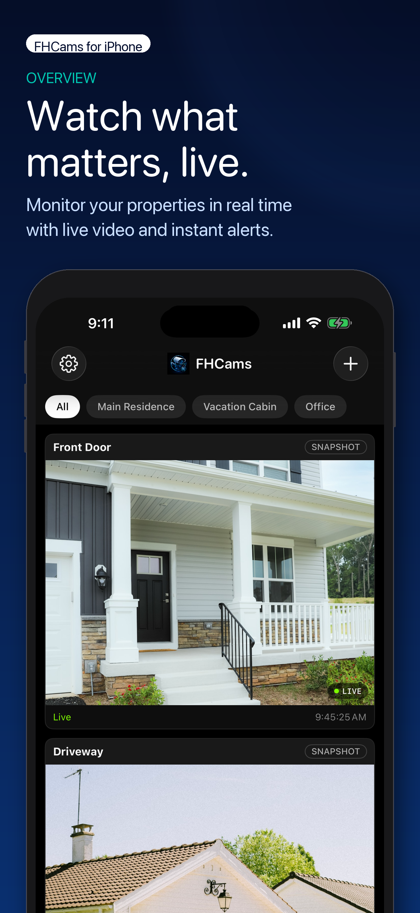
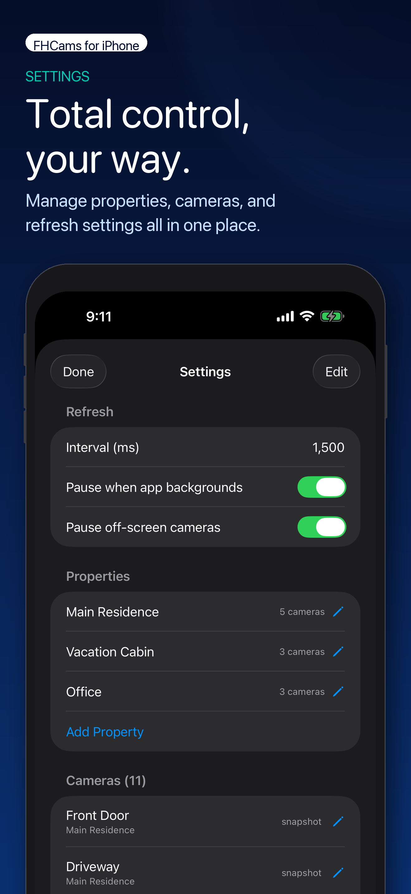

Mobile App Development
Plan, design, and build mobile experiences with stronger UX, smarter platform decisions, and release-ready polish.
FH Development Studio helps founders, small businesses, and internal teams turn ideas, outdated experiences, and stalled product efforts into polished mobile apps, websites, and internal tools that earn trust faster, communicate value more clearly, and stay easier to support over time.
FH Development Studio is built for teams that need sharper product direction, dependable execution, and digital work that feels credible in market, not just technically complete.
Plan, design, and build mobile experiences with stronger UX, smarter platform decisions, and release-ready polish.
Create responsive websites and product interfaces that communicate value faster and convert with less friction.
Turn repetitive workflows into practical internal software that saves time, improves visibility, and reduces operational drag.
Improve existing products by tightening flows, clarifying priorities, and fixing the parts that are costing trust or conversions.
FHWebCheck gives users a cleaner way to monitor critical websites, review status fast, and act without digging through noisy dashboards or bloated tooling. It is designed to make monitoring feel calmer, faster, and more useful when uptime visibility actually matters.




FHCams is built for users who need quick visibility across homes, offices, cabins, and other monitored spaces without getting buried in a cluttered camera interface. The app keeps live views, property filters, and settings organized so monitoring stays practical as locations, cameras, and daily demands grow.



Clarify goals, users, constraints, and the smartest first release before time gets burned in the wrong direction.
Shape the experience, build the core product, and keep quality, speed, and maintainability visible throughout delivery.
Prepare the release, tighten the details, and stay available for fixes, iteration, and practical improvement after launch.
Start with a focused inquiry and get a practical conversation about goals, scope, platform fit, and the fastest path to something clearer, stronger, and ready to earn trust.
Most inquiries receive an initial response within 1 to 2 business days.